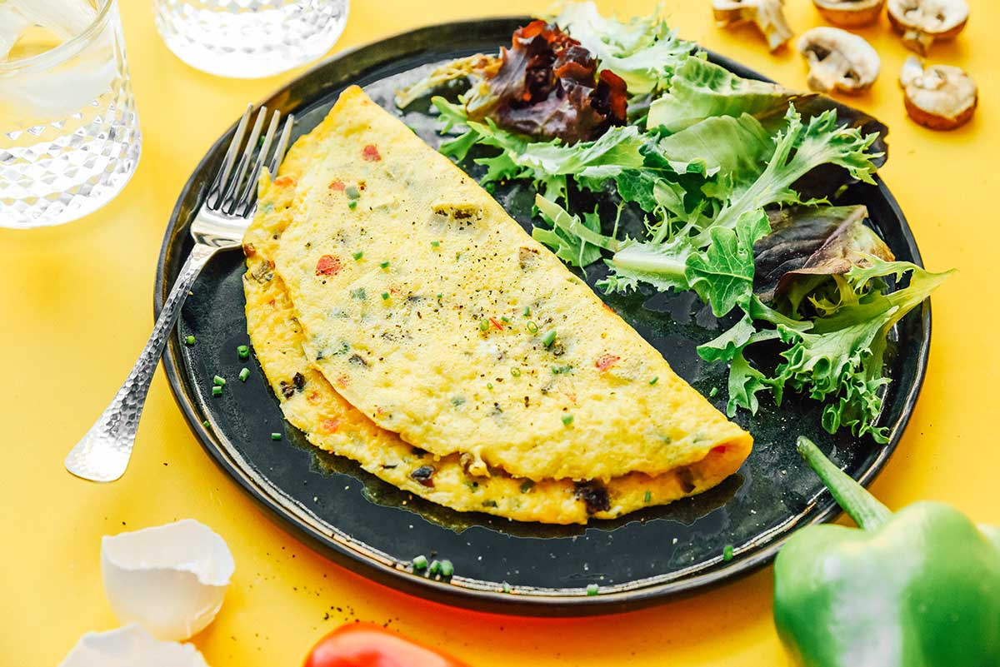

Vegetable Omelette Recipe
A 5 minute recipe that is healthy and perfect for breakfast
Ingredients
Eggs
Milk
Butter
Spinach
White Onion
Bell Peppers
Cheese
Salt
Black Pepper
Instructions
Whisk eggs and milk until it's smooth
Melt half the butter in a non-stick skillet over medium heat and add the chopped vegetables
Cook until the vegetables are tender
Pour in the remaining butter, switch to low/medium heat and pour the egg mixture into the skillet
Tilt the pan to spread the eggs evenly
Sprinkle with cheese and season with salt and pepper
Fold and serve hot